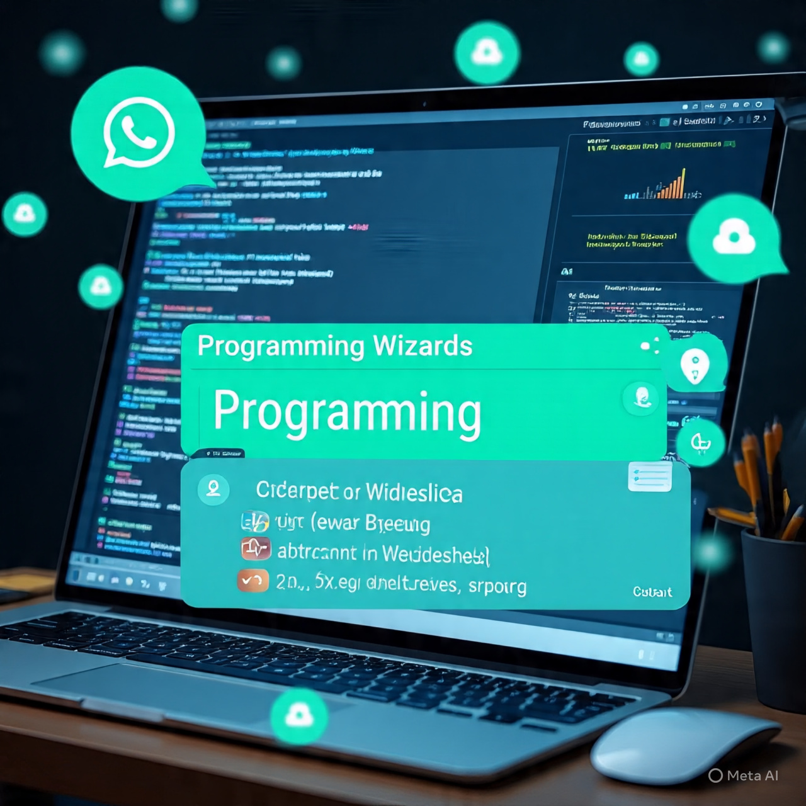

My Projects
A collection of my hands-on projects in Web Development and
Programming,
built while learning and improving my skills.
Web Development Project

This project represents my journey in web development. I used HTML, CSS, and basic JavaScript to build simple and responsive web pages.
Web Development Project

This project shows my programming skills using languages like Java and C++. I focused on problem solving and logical thinking.